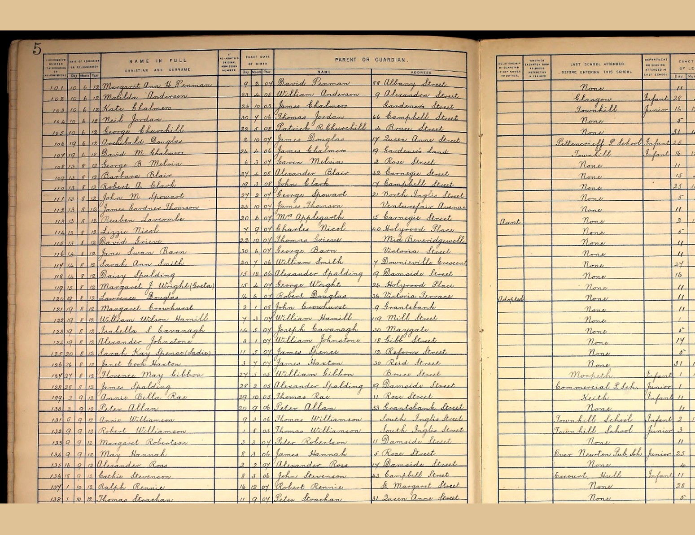

The Names He Carried · Academic Edition
Doug Garceau, comp., “School admission register: Queen Anne Infant School, Dunfermline, page 5,” DOC-024, The Names He Carried: Academic Edition (https://douggarceau.com/the-names-he-carried/archive/items/doc-024.html : accessed [date]); original: Queen Anne Infant School admission register, page 5, entry 120, Dunfermline, Fife.

This copy carries yellow highlighting or red outlining added for the book site. It is not on the original.
Tap an image to open it full size.
Everything as written, including misspellings. [?] marks an uncertain reading. Struck-through words are marked as struck through. Notes in square brackets describe the page and are not part of it.
[Left page, page number 5] [Columns] Successive Number for Admission or Re-admission | Date of Admission or Re-admission: Day, Month, Year | Name in Full: Christian and Surname | If re-admitted, original admission number | Exact Date of Birth: Day, Month, Year | Parent or Guardian: Name, Address 101 | 10 6 12 | Margaret Ann H Penman | | 9 2 07 | David Penman | 88 Albany Street 102 | 10 6 12 | Matilda Anderson | | 23 4 05 | William Anderson | 9 Alexandra Street 103 | 10 6 12 | Kate Chalmers | | 23 10 03 | James Chalmers | Gardener's Street 104 | 10 6 12 | Neil Jordan | | 30 7 06 | Thomas Jordan | 66 Campbell Street 105 | 10 6 12 | George Churchill | | 22 5 08 | Patrick R Churchill | 4 Bruce Street 106 | 19 6 12 | Archibald Douglas | | 2 10 07 | James Douglas | 17 Queen Anne Street 107 | 19 6 12 | David M Chalmers | | 24 4 06 | James Chalmers | 19 Gardener's Land 108 | 13 8 12 | George B Melvin | | 6 3 07 | Gavin Melvin | 2 Rose Street 109 | 13 8 12 | Barbara Blair | | 27 4 08 | Alexander Blair | 12 Carnegie Street 110 | 13 8 12 | Robert A. Clark | | 19 3 08 | John Clark | 14 Campbell Street 111 | 13 8 12 | John M. Spowart | | 27 2 07 | George Spowart | 21 North Inglis Street 112 | 13 8 12 | James Gardner Thomson | | 23 10 07 | James Thomson | Venturefair Avenue 113 | 13 8 12 | Reuben Lacombe[?] | | 20 6 07 | Mrs Applegarth | 15 Carnegie Street 114 | 13 8 12 | Lizzie Nicol | | 7 9 07 | Charles Nicol | 40 Holyrood Place 115 | 13 8 12 | David Grieve | | 22 10 07 | Thomas Grieve | Mid Beveridgewell 116 | 14 8 12 | Jane Swan Barn | | 30 6 07 | George Barn | Victoria Street 117 | 14 8 12 | Sarah Ann Smith | | 20 7 06 | William Smith | 7 Downieville Crescent 118 | 14 8 12 | Daisy Spalding | | 15 12 06 | Alexander Spalding | 19 Damside Street 119 | 15 8 12 | Margaret J Wright (Greta) | | 15 4 07 | George Wright | 26 Holyrood Place 120 | 19 8 12 | Lawrence Douglas | | 14 6 07 | Robert Douglas | 36 Victoria Terrace 121 | 19 8 12 | Margaret Crowhurst | | 2 1 08 | John Crowhurst | 9 Grantsbank 122 | 19 8 12 | William Wilson Hamill | | 7 3 07 | William Hamill | 119 Mill Street 123 | 19 8 12 | Isabella S Cavanagh | | 14 5 07 | Joseph Cavanagh | 30 Maygate 124 | 19 8 12 | Alexander Johnstone | | 3 1 07 | William Johnstone | 18 Gibb Street 125 | 20 8 12 | Sarah Kay Spence (Sadie) | | 11 5 07 | James Spence | 12 Reform Street 126 | 26 8 12 | Janet Cook Haxton | | 3 7 07 | James Haxton | 30 Reid Street 127 | 27 8 12 | Florence May Gibbon | | 27 5 05 | William Gibbon | Bruce Street 128 | 28 8 12 | James Spalding | | 28 2 05 | Alexander Spalding | 19 Damside Street 129 | 2 9 12 | Annie Bella Rae | | 29 10 05 | Thomas Rae | 11 Rose Street 130 | 2 9 12 | Peter Allan | | 20 9 06 | Peter Allan | 33 Grantsbank Street 131 | 9 9 12 | Annie Williamson | | 9 3 06 | Thomas Williamson | South Inglis Street 132 | 9 9 12 | Robert Williamson | | 1 5 03 | Thomas Williamson | South Inglis Street 133 | 9 9 12 | Margaret Robertson | | 3 3 07 | Peter Robertson | 11 Damside Street 134 | 9 9 12 | May Hannah | | 8 3 06 | James Hannah | 5 Rose Street 135 | 16 9 12 | Alexander Ross | | 2 2 07 | Alexander Ross | 17 Damside Street 136 | 18 9 12 | Cathie Stevenson | | 8 3 06 | John Stevenson | 43 Campbell Street 137 | 1 10 12 | Ralph Rennie | | 16 12 07 | Robert Rennie | St Margaret Street 138 | 1 10 12 | Thomas Strachan | | 11 9 07 | Peter Strachan | 31 Queen Anne Street [Right page, cut off at the right edge] [Columns] Relationship of Guardian if not father or mother | Whether exemption from religious instruction is claimed | Last School Attended before entering this School | Department or Division attended at Last School | Exact Date of Leaving [cut off] 101 — None — 11 102 — Glasgow — Infant — 28 103 — Townhill — Junior — 16 104 — None — 5 105 — None — 31 106 — Pittencrieff P School — Infant — 25 107 — Townhill — Infant — 16 108 — None — 11 109 — None — 15 110 — None — 25 111 — None — 5 112 — None — 11 113 Aunt — None — 2 114 — None — 5 115 — None — 11 116 — None — 11 117 — None — 27 118 — None — 16 119 — None — 11 120 Adopted — None — 11 121 — None — 11 122 — None — 1 123 — None — 5 124 — None — 14 125 — None — 5 126 — None — 31 127 — Morpeth — Infant — 1 128 — Commercial P Sch. — Junior — 1 129 — Keith — Infant — 11 130 — None — 11 131 — Townhill School — Infant — 2 132 — Townhill School — Junior — 3 133 — None — 11 134 — Over Newton Pub Sch — Junior — 25 135 — None — 4 136 — Escourt, Hull — Infant — 11 137 — None — 28 138 — None — 5